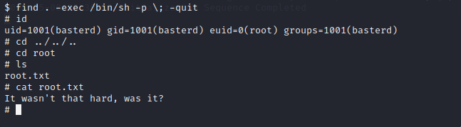

Boiler CTF
2024-05-06
Niestety z niewiadomego mi powodu folder ze zdjęciami pierwszego przejścia tego challenga gdzię wszedłem w dużo więcej pułapek zniknał mi z dysku co spowodowało że musiałem jeszcze raz go przejść i w tym podejściu pokazane będzie mniej baitów ale to może i lepiej.
Standardowo zacząłem od skanowania infrastruktury.
Odrazu w oczy rzucił się serwer ftp który oczywiście wyglądał zbyt pięknie żeby był prawdziwy.

Następnie skanowałem podstrony których okazało się bardzo dużo ale _test okazała się tą której szukałem.
Po wyszukaniu sformułowania sar2html w exploitdb okazało się że bardzo łatwo można wykonywać komendy po przez URL
Co pozowliło uzysakć hasło i login do konta ssh
Następnie po przez komende find udało się wyszukać że po przez co zabawne narzędzie find mogę uzyskać uprawnienia roota co kończyło wyzwanie.
Źródło: https://tryhackme.com/r/room/boilerctf2